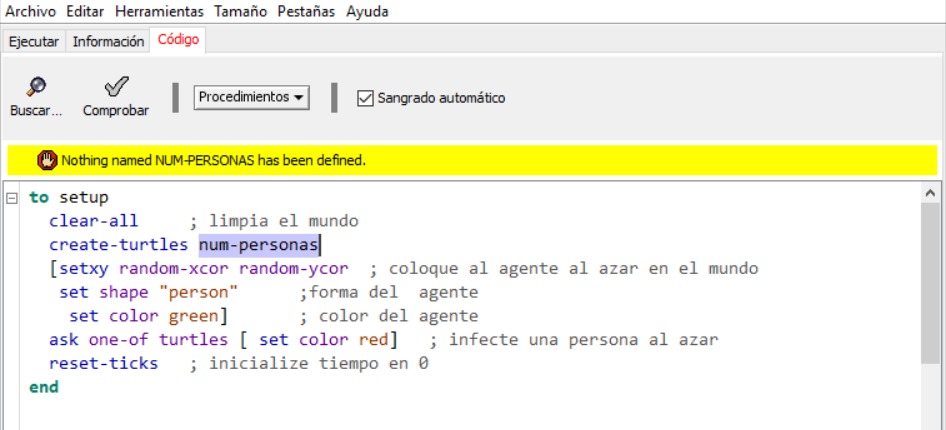
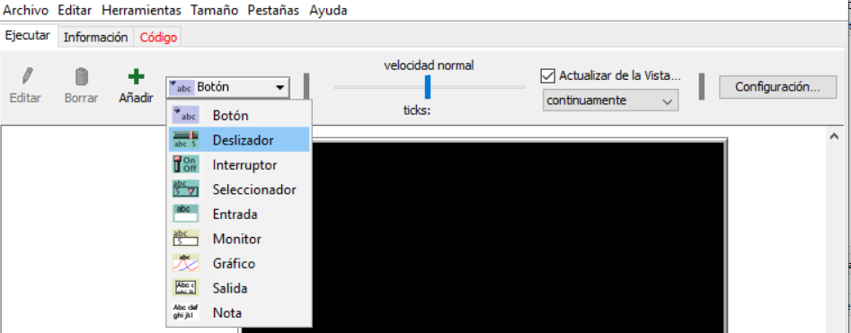
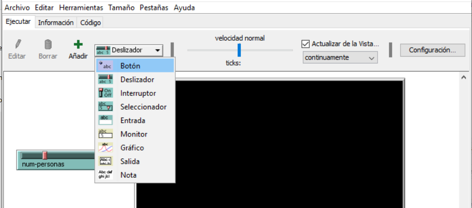
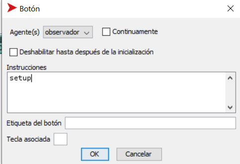
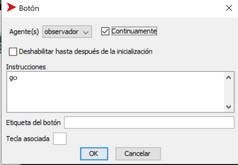

8 La Construcción y el Análisis del Modelo
8.1 Construcción del Modelo
8.1.1 Descripción del Modelo
Se tiene un número de personas en un espacio cerrado, una de ellas con una enfermedad infecciosa y las otras sanas. las personas se mueven al azar dentro del espacio cerrado todas a una misma velocidad. Cuando una persona sana se encuentra “cerca” de una persona infectada, estaadquiere inmediatamente la infección, se asume que una persona infectada no vuelve a quedar sana. Inicialmente solo una persona se encuentra infectada Se quiere analizar como evoluciona la gripa en este espacio cerrado Las dimensiones del espacio cerrado son fijas (por eejmplo 32mts x32mts) y también es fijo el número de personas infectadas inicialmente (en este caso una). El número de personas en el cuarto varía (digamos de 50 a 200 personas) y lo que se quiere medir es el tiempo que transcurre hasta que todas las personas quedan infectadas
8.1.2 Pregunta
¿Qué relación hay entre el tiempo para la infección total y el número de personas en el cuarto?
(¿más personas en el cuarto se demoran más en infectarse todas que si hay menos personas? )
8.1.3 Implementando el Modelo
Abra el Programa NetLogo:

Haga clic en la pestaña código y coloque lo siguiente:
to setup
clear-all ; limpia el mundo
create-turtles num-personas
[setxy random-xcor random-ycor ; coloque al agente al azar en el mundo
set shape "person" ;forma del agente
set color green] ; color del agente
ask one-of turtles [ set color red] ; infecte una persona al azar
reset-ticks ; inicialize tiempo en 0
end
Oprima el botón comprobar, aparece el siguiente error en amarillo:

Oprima el botón Ejecutar, y seleccione la opción deslizador:

Haga clic a la izquierda de la pantalla negra, aparece una ventana, llénela de la siguiente manera y oprima ok.

Haga clic en la pestaña código de nuevo y coloque lo siguiente:
to go
if all? turtles [color = red ] [stop]
ask turtles with [color = red]
[infect]
ask turtles [move]
tick
end
to infect
ask turtles-here with [color = green]
[set color red]
end
to move
move-to one-of neighbors
end
Oprima el botón Ejecutar, y seleccione la opción Botón:

Haga clic arriba del deslizador num-personas , aparece una ventan llénela de la siguinte manera:

Seleccione de nuevo la opción botón y haga clic a la derecha del botón setup, aparece una ventana llénela de la siguiente manera:


Puede ensayar la funcionalidad del modelo en el siguiente applet: